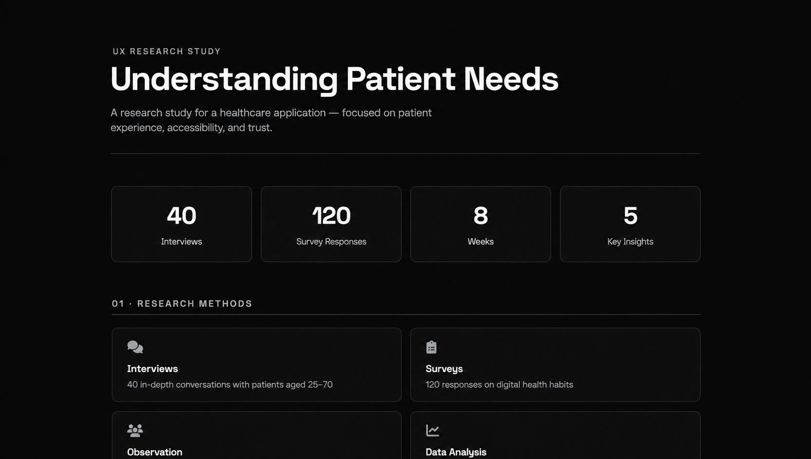

Keenwiix Research
A UX research study for a healthcare application — focused on patient needs, accessibility, and building digital trust through calm design.
View research summary
Project Overview
Keenwiix Research is a comprehensive UX study designed to understand the needs, frustrations, and behaviors of patients using digital healthcare tools. The research informed the redesign of a patient-facing application — and changed how the team thought about their users.
Problem
The healthcare application had low engagement and high drop-off. Users found it confusing, intimidating, and hard to navigate — especially older patients. The team didn't understand why.
- Low daily active users despite a large patient base
- High abandonment during onboarding
- Confusing medical terminology
- Poor accessibility for older adults
Research Methods
A mixed-methods approach — combining qualitative depth with quantitative scale.
Interviews
40 in-depth conversations with diverse patients
Surveys
120 responses on digital health habits
Usability Tests
15 participants tested 3 competitor apps
Analytics
Funnel analysis of 50K+ real sessions
Research Questions
- Why do patients abandon the app during onboarding?
- What level of medical terminology is appropriate?
- How do older adults interact with mobile health tools?
- What builds trust in a digital health experience?
Research Process
Planning & Recruitment
Defined research questions and recruited a diverse participant group.
Data Collection
Conducted interviews, surveys, and usability sessions over 8 weeks.
Analysis
Coded qualitative data and identified patterns across all methods.
Synthesis
Created personas, journey maps, and insight reports.
Recommendations
Delivered prioritized design recommendations to the team.
Key Insights
Five insights emerged from the research — each directly shaping the redesign of the application.
Simple Language
Patients want clarity, not medical jargon
Trust & Calm
Quiet design builds digital trust
Accessibility First
Many users are older — access is required
Family Sharing
Accounts must support family involvement
Impact
"The research study completely changed how we think about our patients. It wasn't about features — it was about trust."— Concept Reflection
Lessons Learned
- Research must include the quiet voices
- Accessibility is a research finding, not an afterthought
- Trust is built through clarity and calm
- Insights need to be actionable to matter